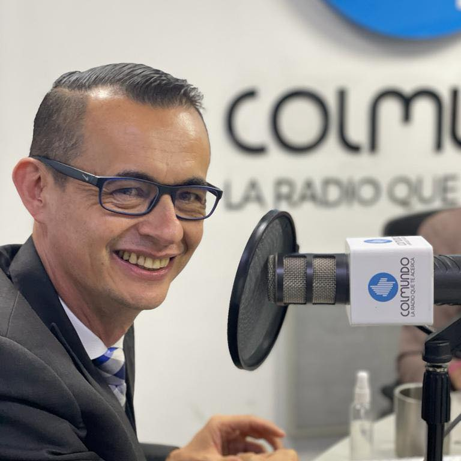

Jackson Camacho
Abogado, con experiencia de 9 años en el ejercicio del periodismo en distintos campos, la comunicación y la creación de contenidos para diferentes medios masivos, formatos y plataformas digitales. Amante estudioso de la radio que informa, que enseña, que respeta, que da contexto.
EXPERIENCIA EN COMUNICACIÓN Y PERIODISMO
Llano Cultura & Folclor, Radio Red RCN RADIO
- • Investigador.
- • Presentador.
- • Comentarista.
- • Creador Contenido Radial.
2022 - Actualmente
ASB Noticias-Colmundo Radio
- • Periodista.
- • Presentador.
- • Analista.
- • Creador Contenido Radial.
2021 - Actualmente
Cafe Deportivo Colombia
- • Director.
- • Creativo espacios diferentes distintos al fútbol.
- • Creador de contenido de clicismo Grandes Vueltas
- • Presentador, periodista.
2020 - Actualmente
Colmundo Radio
- • Director y presentador. "Portal Informativo fin de semana".
- • Periodista en mesa de trabajo "Portal Informativo diaro 6AM".
- • Periodista, presentador, reportero de espacio "Tiempo de Juego".
- • Creador de contenido radial, editor de audio.
2016 - Diciembre
Ballet Azul Radio Internet
- • Presentador, periodista "Azules Días"
- • Creador y presentador conjunto de "Dfacto Noticias y Opinión resumen semanal".
2013 - 2014
EXPERIENCIA NO RELACIONADA
I.C.B.F
- • Funcionario I.C.B.F.
Contenido Creado
La Notas de Café, nacen de la idea de poder informar en corto tiempo, sobre diferentes temas (curiosidades, historia, inventos, personajes, hechos del deporte, ciencia, misterio, cultura) de una manera amable, respetuosa, llenando ese vacío que en ocasiones genera la falta mayoritaria de lectura. Son temas propios de ambientes de “tertulia y café”.